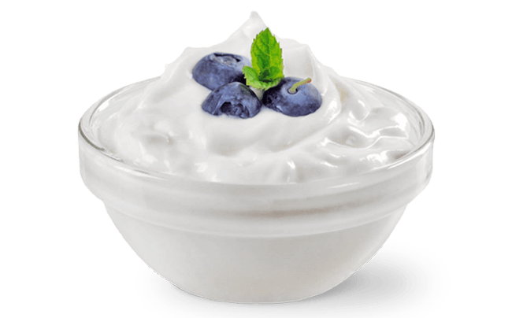

New Product
The Twist of Healthy Yogurt
Nikmati minuman yogurt yang lezat dan lembut, dibuat dengan bakteri Lactobacillus Bulgaricus yang didatangkan langsung dari Bulgaria. Resep tradisional yang unik ini menghasilkan rasa yogurt yang enak dan segar untuk dinikmati seluruh anggota keluarga kapan saja. Menggunakan susu berkualitas terbaik hasil dari sapi A2 kami, yogurt ini kaya akan protein, kalsium, vitamin dan mineral.
